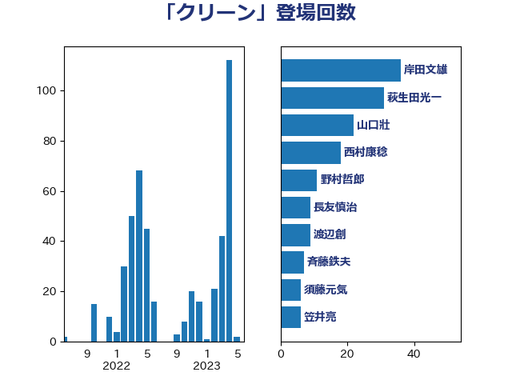

単語「クリーン」

| 岸田文雄 | 自由民主党 | 36 回 |
| 萩生田光一 | 自由民主党 | 31 回 |
| 山口壯 | 自由民主党 | 22 回 |
| 西村康稔 | 自由民主党 | 18 回 |
| 野村哲郎 | 自由民主党 | 11 回 |
| 長友慎治 | 国民民主党 | 9 回 |
| 渡辺創 | 立憲民主党 | 9 回 |
| 斉藤鉄夫 | 公明党 | 7 回 |
| 須藤元気 | 無所属 | 6 回 |
| 笠井亮 | 日本共産党 | 6 回 |
| 阿部知子 | 立憲民主党 | 5 回 |
| 舩後靖彦 | れいわ新選組 | 5 回 |
| 細田健一 | 自由民主党 | 5 回 |
| 山際大志郎 | 自由民主党 | 5 回 |
| 阿達雅志 | 自由民主党 | 4 回 |
| 近藤昭一 | 立憲民主党 | 4 回 |
| 空本誠喜 | 日本維新の会 | 4 回 |
| 秋葉賢也 | 自由民主党 | 4 回 |
| 玉木雄一郎 | 国民民主党 | 4 回 |
| 岩渕友 | 日本共産党 | 4 回 |
| 山本剛正 | 日本維新の会 | 4 回 |
| 宮口治子 | 立憲民主党 | 4 回 |
| 安江伸夫 | 公明党 | 4 回 |
| 音喜多駿 | 日本維新の会 | 3 回 |
| 青木愛 | 立憲民主党 | 3 回 |
| 鈴木義弘 | 国民民主党 | 3 回 |
| 西村明宏 | 自由民主党 | 3 回 |
| 芳賀道也 | 国民民主党 | 3 回 |
| 紙智子 | 日本共産党 | 3 回 |
| 石川博崇 | 公明党 | 3 回 |
| 石井拓 | 自由民主党 | 3 回 |
| 浜野喜史 | 国民民主党 | 3 回 |
| 末松信介 | 自由民主党 | 3 回 |
| 加藤明良 | 自由民主党 | 3 回 |
| 佐藤公治 | 立憲民主党 | 3 回 |
| 中川宏昌 | 公明党 | 3 回 |
| 黄川田仁志 | 自由民主党 | 2 回 |
| 金子恵美 | 立憲民主党 | 2 回 |
| 野田国義 | 立憲民主党 | 2 回 |
| 西銘恒三郎 | 自由民主党 | 2 回 |
| 西岡秀子 | 国民民主党 | 2 回 |
| 藤木眞也 | 自由民主党 | 2 回 |
| 礒崎哲史 | 国民民主党 | 2 回 |
| 石垣のりこ | 立憲民主党 | 2 回 |
| 石井正弘 | 自由民主党 | 2 回 |
| 滝波宏文 | 自由民主党 | 2 回 |
| 池畑浩太朗 | 日本維新の会 | 2 回 |
| 村田享子 | 立憲民主党 | 2 回 |
| 新妻秀規 | 公明党 | 2 回 |
| 庄子賢一 | 公明党 | 2 回 |
| 平沼正二郎 | 自由民主党 | 2 回 |
| 平山佐知子 | 無所属 | 2 回 |
| 山口晋 | 自由民主党 | 2 回 |
| 寺田静 | 無所属 | 2 回 |
| 宮崎勝 | 公明党 | 2 回 |
| 大野泰正 | 自由民主党 | 2 回 |
| 堤かなめ | 立憲民主党 | 2 回 |
| 吉良よし子 | 日本共産党 | 2 回 |
| 上月良祐 | 自由民主党 | 2 回 |
| ながえ孝子 | 無所属 | 2 回 |
| 鰐淵洋子 | 公明党 | 1 回 |
| 高橋千鶴子 | 日本共産党 | 1 回 |
| 青山周平 | 自由民主党 | 1 回 |
| 長浜博行 | 無所属 | 1 回 |
| 金村龍那 | 日本維新の会 | 1 回 |
| 野中厚 | 自由民主党 | 1 回 |
| 里見隆治 | 公明党 | 1 回 |
| 道下大樹 | 立憲民主党 | 1 回 |
| 角田秀穂 | 公明党 | 1 回 |
| 船橋利実 | 自由民主党 | 1 回 |
| 竹内譲 | 公明党 | 1 回 |
| 穂坂泰 | 自由民主党 | 1 回 |
| 稲田朋美 | 自由民主党 | 1 回 |
| 稲津久 | 公明党 | 1 回 |
| 福田達夫 | 自由民主党 | 1 回 |
| 福山哲郎 | 立憲民主党 | 1 回 |
| 石川昭政 | 自由民主党 | 1 回 |
| 石井章 | 日本維新の会 | 1 回 |
| 田島麻衣子 | 立憲民主党 | 1 回 |
| 田名部匡代 | 立憲民主党 | 1 回 |
| 片山大介 | 日本維新の会 | 1 回 |
| 瀬戸隆一 | 自由民主党 | 1 回 |
| 滝沢求 | 自由民主党 | 1 回 |
| 浜口誠 | 国民民主党 | 1 回 |
| 浅野哲 | 国民民主党 | 1 回 |
| 泉健太 | 立憲民主党 | 1 回 |
| 河野義博 | 公明党 | 1 回 |
| 池田佳隆 | 自由民主党 | 1 回 |
| 江島潔 | 自由民主党 | 1 回 |
| 松川るい | 自由民主党 | 1 回 |
| 朝日健太郎 | 自由民主党 | 1 回 |
| 斎藤アレックス | 国民民主党 | 1 回 |
| 岩田和親 | 自由民主党 | 1 回 |
| 山本左近 | 自由民主党 | 1 回 |
| 山崎誠 | 立憲民主党 | 1 回 |
| 小野田紀美 | 自由民主党 | 1 回 |
| 小山展弘 | 立憲民主党 | 1 回 |
| 奥下剛光 | 日本維新の会 | 1 回 |
| 大島敦 | 立憲民主党 | 1 回 |
| 塩川鉄也 | 日本共産党 | 1 回 |
| 和田有一朗 | 日本維新の会 | 1 回 |
| 古賀友一郎 | 自由民主党 | 1 回 |
| 佐藤啓 | 自由民主党 | 1 回 |
| 住吉寛紀 | 日本維新の会 | 1 回 |
| 丸川珠代 | 自由民主党 | 1 回 |
| 下野六太 | 公明党 | 1 回 |